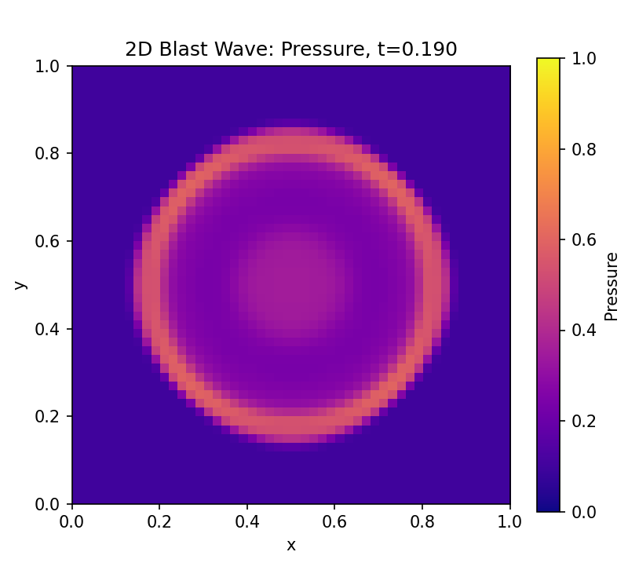
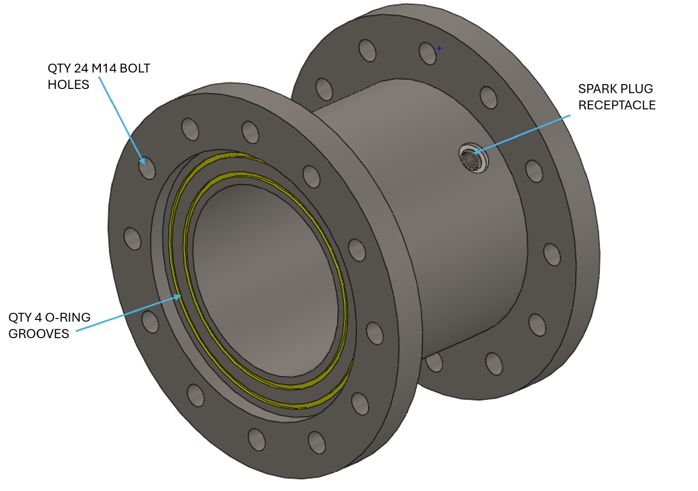
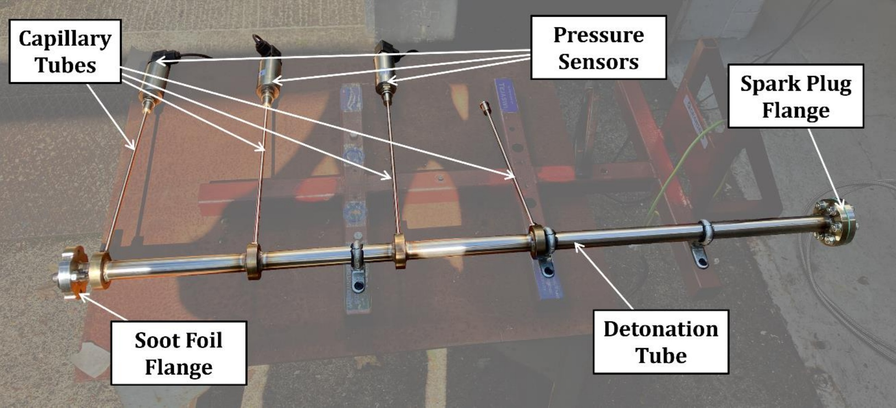
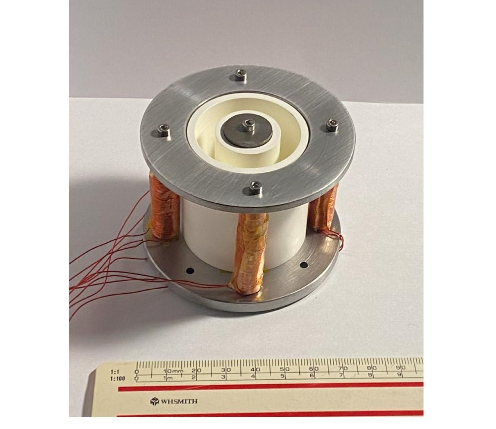

Selected MSc research from CSPL's student programme, some of which has gone on to become full research projects.

Cameron Leslie's MSc thesis, supervised by Professor Stephen Hobbs over the summer of 2021, investigated the Air-Breathing Electric Propulsion (ABEP) concept from first principles, deriving a baseline system model and running the initial performance calculations for a cryopump-based propellant intake.
That thesis work went on to secure UK Space Agency feasibility funding and now underpins an ESA co-funded PhD (2024–2027) that develops the concept into hardware. It's the clearest example so far of an MSc project at CSPL growing into a full research programme.
Read the full project →Benjamin Kanda and Aaron Singh Sidhu's paired 2022 projects, together known as Project C-Star, delivered Cranfield's first 1.5kN N₂O/isopropanol bipropellant sounding rocket engine, "Cyclone." Kanda's half of the work designed, built and test-fired the engine itself, proving out a metal 3D-printed swirl/showerhead injector and a cork-phenolic ablative liner across the stable ~5-second burn shown here. Sidhu's half designed and built the feed, control, ignition and data-acquisition systems and test/tank stands that supported it, devising the ignition sequence used in this first successful hot-fire on 25 August 2022.

Genis Bonet Garcia's thesis ported an existing MATLAB RDE flow solver into a fully vectorised Python/NumPy implementation, pairing MUSCL reconstruction with an HLLE Riemann flux and SSP-RK2 time-stepping. Verified against the Sod shock tube and this circular blast case, the vectorised solver matched the MATLAB baseline to sub-1 % accuracy while running roughly 17-18× faster on larger grids. A companion JAX-based chemistry module, benchmarked against Cantera, showed accelerating speed-ups (up to 37×) as the number of reactors grew, laying the groundwork for future operator-split reactive coupling.

Jack Tasker's thesis addressed the Hollow RDE variant, intended to mitigate the heat-transfer and wave-stability challenges facing conventional rotating detonation engines. His work delivered a modular, oxygen-rich test rig rated to a 5 MPa chamber pressure, designed to enable future researchers to reproduce prior numerical and experimental studies and to trial new injector and geometry configurations with minimal rebuild effort.

Gregor Arbuckle's project tackled one of the most practical bottlenecks in detonation engines: reliably triggering a detonation wave in the first place. Using an acetylene-oxygen pre-detonator tube instrumented with pressure sensors and soot foils, he confirmed consistent supersonic wave generation across equivalence ratios of 0.45-1.36. He showed that cell size, and hence detonability, could be tuned via the fuel/oxidiser ratio, insight that feeds directly into designing pre-detonators for larger RDE test rigs.

Josh Worwood's thesis designed and built a laboratory-scale Stationary Plasma (Hall-effect) Thruster testbed intended to make electric-propulsion hardware accessible for education and research. Starting from sub-kilowatt scaling laws and finite-element modelling of the magnetic circuit, the design was translated into a manufacturable two-configuration (short/long channel) thruster using boron nitride channel inserts, EN1A steel magnetic cores, and custom-wound electromagnets, demonstrating that a HET prototype can be realised within the scope of a single master's thesis.
CSPL welcomes enquiries from prospective research students, industry partners and fellow academics working across electric and chemical propulsion.